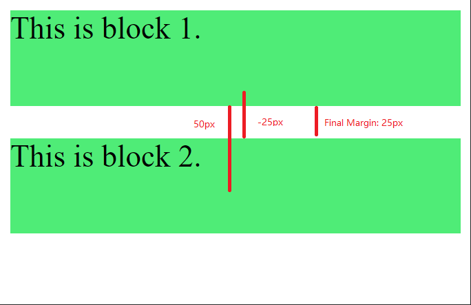

Margin Collapse
Top and bottom margins of elements are sometimes collapsed into a single margin that is equal to the largest of the two margins.
This does not happen on left and right margins! Only top and bottom margins!
Here are some images to furthor explain margin collapse
